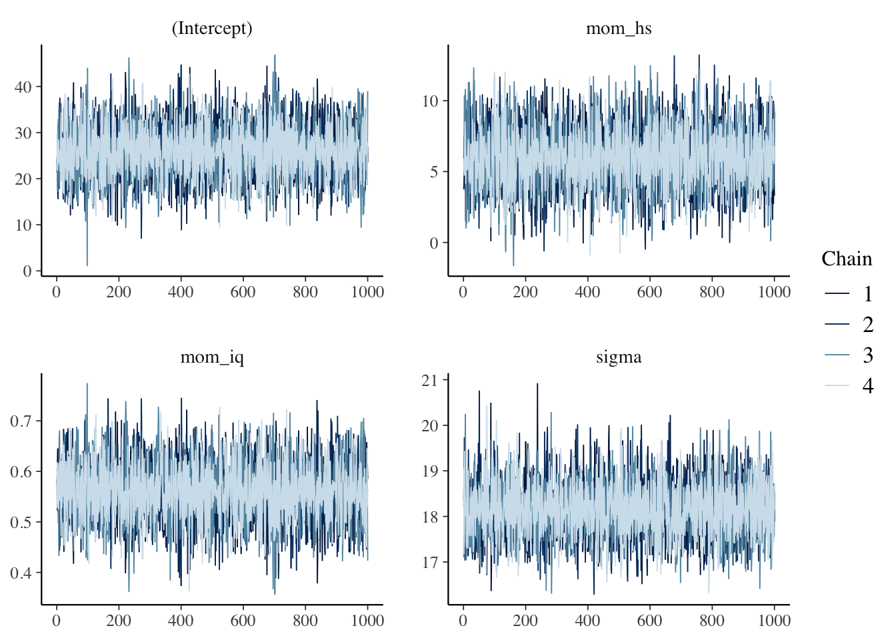
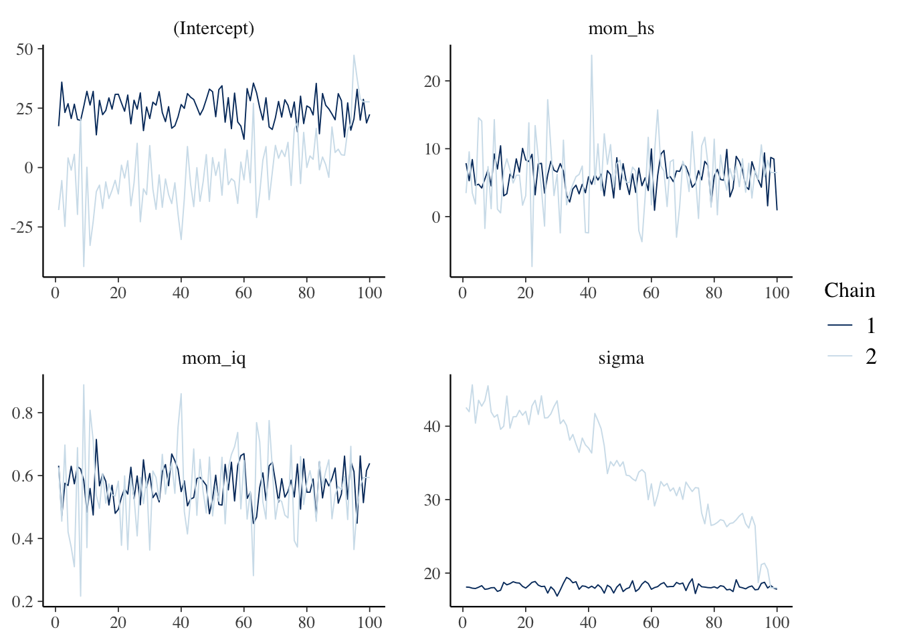
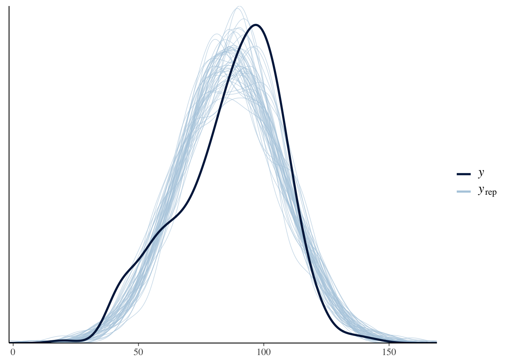
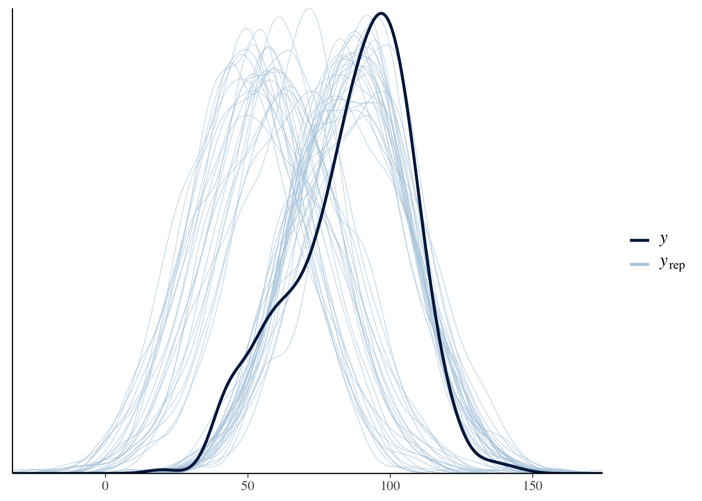

A principal barreira computacional para estatística bayesiana é o denominador \(P(\text{data})\) da fórmula de Bayes:
\[P(\theta | \text{data})=\frac{P(\theta) \cdot P(\text{data} | \theta)}{P(\text{data})}\]
Em casos discretos podemos fazer o denominador virar a soma de todos os paramêtros usando a regra da cadeia de probabilidade:
\[P(A,B|C)=P(A|B,C) \times P(B|C)\]
Isto também é chamado de marginalização:
\[P(\text{data})=\sum_{\theta} P(\text{data} | \theta) \times P(\theta)\]
Porém no caso de valores contínuos o denominador \(P(\text{data})\) vira uma integral bem grande e complicada de calcular:
\[P(\text{data})=\int_{\theta} P(\text{data} | \theta) \times P(\theta)d \theta\]
Em muitos casos essa integral vira intrátavel (incalculável) e portanto devemos achar outras maneiras de cálcular a probabilidade posterior \(P(\theta | \text{data})\) de Bayes sem usar o denominador \(P(\text{data})\).
Para normalizar a posterior com o intuito de torná-la uma distribuição probabilística válida. Isto quer dizer que a soma de todas as probabilidades dos eventos possíveis da distribuição probabilística devem ser iguais a 1:
Ao removermos o denominador \((\text{data})\) temos que a posterior \(P(\theta | \text{data})\) é proporcional à prior vezes a verossimilhança \(P(\theta) \cdot P(\text{data} | \theta)\)
\[P(\theta | \text{data}) \propto P(\theta) \cdot P(\text{data} | \theta)\]
Este vídeo do YouTube explica muito bem o problema do denominador.
Aí que entra simulação Montecarlo. Simulação Montecarlo é usada quando não é possível coletar amostras de \(\theta\) direto da distribuição probabilística posterior \(P(\theta | \text{data})\). Ao invés disso, nos coletamos amostras de maneira iterativa que a cada passo do processo nós esperamos que a distribuição da qual amostramos se torna cada vez mais similar à posterior \(P(\theta | \text{data})\).
Não vamos cobrir a parte computacional ou a base matemática por trás de Markov Chain Monte Carlo (MCMC). Quem quiser, pode ler os capítulos 11 e 12 do livro Bayesian Data Analysis (3rd edition) de Gelman et al. (2014)
rstanarmComo configuração padrão, o pacote rstanarm utiliza uma modalidade de MCMC que usa dinâmicas Hamiltoneanas chamada Hamiltonian Monte Carlo (HMC). HMC é a modalidade de MCMC mais eficiente para gerar inferências Bayesianas. Em especial, rstanarm e a linguagem Stan usam HMC com uma técnica chamada No-U-Turn Sampling (NUTS), que faz HMC ser bem eficiente e não desperdiça amostragens.
Além disso, os argumentos padrões do HMC no rstanarm são o 4 correntes Markov de amostragem (chains = 4) e o 2.000 iterações de cada corrente (iter = 2000). Sendo que, por padrão, HMC descarta a primeira metade (1.000) das iterações como aquecimento (warmup = floor(iter/2)).
Relembrando o exemplo da aula de regressão linear, vamos usar o mesmo dataset kidiq. São dados de uma survey de mulheres adultas norte-americanas e seus respectivos filhos. Datado de 2007 possui 434 observações e 4 variáveis:
kid_score: QI da criança;mom_hs: binária (0 ou 1) se a mãe possui diploma de ensino médio;mom_iq: QI da mãe; emom_age: idade da mãe.Vamos estimar um modelo de regressão linear Bayesiano na qual a variável dependente é kid_score e as independentes são mom_hs e mom_iq.
options(mc.cores = parallel::detectCores())
options(Ncpus = parallel::detectCores())
library(rstanarm)
model <- stan_glm(
kid_score ~ mom_hs + mom_iq,
data = kidiq
)Um modelo estimado pelo rstanarm pode ser inspecionado em relação ao desempenho da amostragem MCMC. Ao chamarmos a função summary() no modelo estimado há uma parte chamada MCMC diagnostics.
summary(model)##
## Model Info:
## function: stan_glm
## family: gaussian [identity]
## formula: kid_score ~ mom_hs + mom_iq
## algorithm: sampling
## sample: 4000 (posterior sample size)
## priors: see help('prior_summary')
## observations: 434
## predictors: 3
##
## Estimates:
## mean sd 10% 50% 90%
## (Intercept) 25.9 5.8 18.5 25.8 33.5
## mom_hs 6.0 2.2 3.2 6.0 8.8
## mom_iq 0.6 0.1 0.5 0.6 0.6
## sigma 18.2 0.6 17.4 18.1 19.0
##
## Fit Diagnostics:
## mean sd 10% 50% 90%
## mean_PPD 86.8 1.2 85.2 86.8 88.4
##
## The mean_ppd is the sample average posterior predictive distribution of the outcome variable (for details see help('summary.stanreg')).
##
## MCMC diagnostics
## mcse Rhat n_eff
## (Intercept) 0.1 1.0 4999
## mom_hs 0.0 1.0 4617
## mom_iq 0.0 1.0 4494
## sigma 0.0 1.0 5301
## mean_PPD 0.0 1.0 4201
## log-posterior 0.0 1.0 1823
##
## For each parameter, mcse is Monte Carlo standard error, n_eff is a crude measure of effective sample size, and Rhat is the potential scale reduction factor on split chains (at convergence Rhat=1).A seção MCMC diagnostics possui três colunas de valores para cada parâmetro estimado do modelo.
No nosso caso, temos três parâmetros importantes:
mom_hsmom_iqsigmaAs três métricas são:
mcse: Monte Carlo Standard Error, o erro de mensuração da amostragem Monte Carlo do parâmetron_eff: uma aproximação crua do número de amostras efetivas amostradas pelo MCMCRhat: uma métrica de convergência e estabilidade da corrente MarkovA métrica mais importante para levarmos em consideração é a Rhat que é uma métrica que mensura se as correntes Markov são estáveis e convergiram para um valor durante o progresso total das simulações. Ela é basicamente a proporção de variação ao compararmos duas metades das correntes. Valor de \(1\) implica em convergência e estabilidade. Como padrão o Rhat deve ser menor que \(1.05\) para que a estimação Bayesiana seja válida.
Dependendo do modelo e dos dados é possível que HMC (mesmo com NUTS) não atinja convergência. Nesse caso, ao rodar o modelo rstanarm dará diversos avisos de divergências.
bad_model <- stan_glm(
kid_score ~ mom_hs + mom_iq,
data = kidiq,
chains = 2,
iter = 200
)## Warning: There were 1 chains where the estimated Bayesian Fraction of Missing Information was low. See
## http://mc-stan.org/misc/warnings.html#bfmi-low## Warning: Examine the pairs() plot to diagnose sampling problems## Warning: The largest R-hat is 2.45, indicating chains have not mixed.
## Running the chains for more iterations may help. See
## http://mc-stan.org/misc/warnings.html#r-hat## Warning: Bulk Effective Samples Size (ESS) is too low, indicating posterior means and medians may be unreliable.
## Running the chains for more iterations may help. See
## http://mc-stan.org/misc/warnings.html#bulk-ess## Warning: Tail Effective Samples Size (ESS) is too low, indicating posterior variances and tail quantiles may be unreliable.
## Running the chains for more iterations may help. See
## http://mc-stan.org/misc/warnings.html#tail-ess## Warning: Markov chains did not converge! Do not analyze results!E vemos que o Rhat dos parâmetros estimados do modelo estão bem acima do limiar de \(1.05\).
summary(bad_model)##
## Model Info:
## function: stan_glm
## family: gaussian [identity]
## formula: kid_score ~ mom_hs + mom_iq
## algorithm: sampling
## sample: 200 (posterior sample size)
## priors: see help('prior_summary')
## observations: 434
## predictors: 3
##
## Estimates:
## mean sd 10% 50% 90%
## (Intercept) 11.8 17.3 -13.2 17.1 30.9
## mom_hs 6.0 3.8 1.7 6.1 10.1
## mom_iq 0.6 0.1 0.5 0.6 0.7
## sigma 26.3 9.6 17.8 19.0 41.5
##
## Fit Diagnostics:
## mean sd 10% 50% 90%
## mean_PPD 72.9 15.9 50.2 84.5 88.1
##
## The mean_ppd is the sample average posterior predictive distribution of the outcome variable (for details see help('summary.stanreg')).
##
## MCMC diagnostics
## mcse Rhat n_eff
## (Intercept) 13.9 1.9 2
## mom_hs 0.2 1.0 362
## mom_iq 0.0 1.0 280
## sigma 8.2 4.0 1
## mean_PPD 13.9 3.1 1
## log-posterior 134.8 4.2 1
##
## For each parameter, mcse is Monte Carlo standard error, n_eff is a crude measure of effective sample size, and Rhat is the potential scale reduction factor on split chains (at convergence Rhat=1).O pacote rstanarm tem diversos gráficos interessantes de diagnósticos de convergência das simulações MCMC.
O traceplot é a sobreposição das amostragens MCMC das correntes para cada parâmetro estimado. A ideia é que as correntes se misturam e que não haja nenhuma inclinação ao longo das iterações.
Detalhe: aqui o traceplot usa somente as iterações válidas, após a remoção das iterações de warmup.
plot(model, "trace")
plot(bad_model, "trace") ### Posterior Predictive Check
Um bom gráfico de diagnóstico é o posterior predictive check que compara o histograma da variável dependente \(y\) contra o histograma variáveis dependentes simuladas pelo modelo \(y_{\text{rep}}\). A ideia é que os histogramas reais e simulados se misturem e não haja divergências.
pp_check(model)
pp_check(bad_model)
Se o seu modelo Bayesiano está com problemas de convergência há alguns passos que podem ser tentados. Aqui listados do mais simples para o mais complexo:
iter = XXX e também é possível aumentar o número de correntes com o argumento chains = X. Lembrando que o padrão é iter = 2000 e chains = 4.adapt_delta da lista de opções control. control=list(adapt_delta=0.9). O padrão do adapt_delta é control=list(adapt_delta=0.8). Então quaquer valor entre \(0.8\) e \(1.0\) o torna mais conservador.Stan, Michael Betancourt.sessionInfo()## R version 4.0.3 (2020-10-10)
## Platform: x86_64-apple-darwin17.0 (64-bit)
## Running under: macOS Big Sur 10.16
##
## Matrix products: default
## LAPACK: /Library/Frameworks/R.framework/Versions/4.0/Resources/lib/libRlapack.dylib
##
## locale:
## [1] en_US.UTF-8/en_US.UTF-8/en_US.UTF-8/C/en_US.UTF-8/en_US.UTF-8
##
## attached base packages:
## [1] stats graphics grDevices utils datasets methods base
##
## other attached packages:
## [1] carData_3.0-4 gapminder_0.3.0 skimr_2.1.2 rstanarm_2.21.1 Rcpp_1.0.5 readxl_1.3.1
##
## loaded via a namespace (and not attached):
## [1] nlme_3.1-150 matrixStats_0.57.0 xts_0.12.1 threejs_0.3.3 rstan_2.21.2 repr_1.1.0
## [7] tools_4.0.3 utf8_1.1.4 R6_2.5.0 DT_0.16 colorspace_2.0-0 withr_2.3.0
## [13] tidyselect_1.1.0 gridExtra_2.3 prettyunits_1.1.1 processx_3.4.5 curl_4.3 compiler_4.0.3
## [19] cli_2.2.0 shinyjs_2.0.0 labeling_0.4.2 colourpicker_1.1.0 scales_1.1.1 dygraphs_1.1.1.6
## [25] ggridges_0.5.2 callr_3.5.1 stringr_1.4.0 digest_0.6.27 StanHeaders_2.21.0-6 minqa_1.2.4
## [31] rmarkdown_2.5 base64enc_0.1-3 pkgconfig_2.0.3 htmltools_0.5.0 lme4_1.1-26 highr_0.8
## [37] fastmap_1.0.1 htmlwidgets_1.5.2 rlang_0.4.9 shiny_1.5.0 farver_2.0.3 generics_0.1.0
## [43] zoo_1.8-8 jsonlite_1.7.1 crosstalk_1.1.0.1 gtools_3.8.2 dplyr_1.0.2 inline_0.3.17
## [49] magrittr_2.0.1 loo_2.3.1 bayesplot_1.7.2 Matrix_1.2-18 munsell_0.5.0 fansi_0.4.1
## [55] lifecycle_0.2.0 stringi_1.5.3 yaml_2.2.1 MASS_7.3-53 pkgbuild_1.1.0 plyr_1.8.6
## [61] grid_4.0.3 parallel_4.0.3 promises_1.1.1 crayon_1.3.4 miniUI_0.1.1.1 lattice_0.20-41
## [67] splines_4.0.3 knitr_1.30 ps_1.4.0 pillar_1.4.7 igraph_1.2.6 boot_1.3-25
## [73] markdown_1.1 shinystan_2.5.0 reshape2_1.4.4 codetools_0.2-18 stats4_4.0.3 rstantools_2.1.1
## [79] glue_1.4.2 evaluate_0.14 V8_3.4.0 RcppParallel_5.0.2 nloptr_1.2.2.2 vctrs_0.3.5
## [85] httpuv_1.5.4 cellranger_1.1.0 tidyr_1.1.2 gtable_0.3.0 purrr_0.3.4 assertthat_0.2.1
## [91] ggplot2_3.3.2 xfun_0.19 mime_0.9 xtable_1.8-4 later_1.1.0.1 survival_3.2-7
## [97] rsconnect_0.8.16 tibble_3.0.4 shinythemes_1.1.2 statmod_1.4.35 ellipsis_0.3.1